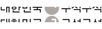

여가
Title 안내
안내 내용
일하고 남은시간 어떻게 보내시나요?
여가란 직업상의 일, 필수적인 가사일, 수업 등과 같은 의무적인 활동 이외에 스포츠, 취미, 휴양 등을 개인의 뜻대로 자유롭게 이용할 수 있는 시간을 말합니다.
은퇴 후 80세까지 건강하게 살 경우 8만 시간의 여유시간이 생깁니다.
은퇴 후에 생기는 긴 시간을 허비하지 않고 보람차게 보내기 위해서는 계획적이고 규칙적인 여가활동이 반드시 필요합니다.
특히 노년기 여가활동은 건강증진, 사회참여, 일상생활의 만족감 증진, 자신감 향상 등 다양한 측면에서 긍정적인 영향을 미칩니다.
지금까지 열심히 일만 해왔다면 이제는 은퇴 후 삶을 준비해야 합니다.
은퇴 후 소소한 재미를 찾을 수 있도록 부담스럽지 않고 꾸준히 할 수 있는 활동을 지금부터 시작하는 것이 좋습니다.
-
 여가 교육
여가 교육등산·트레킹 교육 및 체험 프로그램
한국등산·트레킹지원센터, 국립산악박물관, 국립등산학교에서 등산·트레킹 교육 및 체험 등을 제공합니다.
- 문의처 : 한국등신·트레킹지원센터(☎042-620-6300)
- 신청방법 : 유선 문의
- 제공유형 : 교육 및 서비스
-

여가 서비스여행 지원 서비스
다양한 여행 정보를 제공하여 국민들의 여가 활동을 지원합니다.
- 문의처 : 한국관광공사 대표전화(☎033-738-3000)
- 신청방법 : 홈페이지
- 제공유형 : 정보제공
-
 여가 정보
여가 정보자원봉사(1365)
자원봉사를 통해 나눔을 실천하고 노후를 더욱 보람차게 보낼 수 있도록 지원하는 서비스입니다.
- 문의처 : 1365 콜센터 (☎1365)
- 신청방법 : 유선 및 온라인
- 제공유형 : 정보제공, 서비스
-
 여가 정보
여가 정보자원봉사(아름다운가게)
자원봉사를 통해 나눔을 실천하고 노후를 더욱 보람차게 보낼 수 있도록 지원하는 서비스입니다.
- 문의처 : 아름다운가게 대표전화(☎1577-1113)
- 신청방법 : 유선 및 홈페이지
- 제공유형 : 서비스
-
 여가 서비스
여가 서비스지역 문화프로그램
지역사회 문화향유 기회 확대 및 사회참여 증진을 위하여 주민들의 문화예술 활동을 지원하는 사업입니다.
- 문의처 : 지역별 문화원 유선 문의
- 신청방법 : 유선 문의
- 제공유형 : 서비스
-
 여가 서비스
여가 서비스취미·문화 프로그램(복지관)
가까운 지역사회 구성원들과 함께 어울리며 다양한 취미·여가활동을 즐길 수 있습니다.
- 문의처 : 지역별 복지관 유선 문의
- 신청방법 : 방문 및 유선 문의
- 제공유형 : 서비스
-
여가 서비스
취미·문화 프로그램
가까운 지역사회 구성원들과 함께 다양한 취미·여가활동을 즐길 수 있도록 지원하는 사업입니다.
- 문의처 : 행정복지센터 유선 문의
- 신청방법 : 방문 및 유선 문의
- 제공유형 : 서비스
-
 여가 서비스
여가 서비스통합문화이용권(문화누리카드)
기초생활수급자와 차상위계층이 공연, 전시, 영화, 여행 등 다양한 문화생활을 즐길 수 있도록 지원하는 서비스입니다.
- 문의처 : 문화누리카드 고객지원센터(☎1544-3412)
- 신청방법 : 방문, 홈페이지
- 제공유형 : 서비스
-
 여가 정보
여가 정보평생교육 프로그램
다양한 평생학습 프로그램 정보를 제공하여 자기개발 및 여가 활동 지원합니다.
- 문의처 : 국가평생교육진흥원(☎02-3780-9700)
- 신청방법 : 유선 문의, 홈페이지
- 제공유형 : 정보, 교육 등
-
 여가 교육
여가 교육디지털 역량강화 교육
국민 누구나 디지털 혜택을 누릴 수 있도록 디지털 역량을 기를 수 있는 기회를 제공합니다. 가까운 디지털배움터를 찾아 필요한 교육과 상담서비스를 받아보세요.
- 문의처 : 디지털배움터(☎1800-0096)
- 신청방법 : 홈페이지
- 제공유형 : 교육
-
여가 교육
다문화가족 방문교육서비스
지리적 여건 등으로 센터 이용이 어려운 다문화가족을 대상으로 한국어 교육 등 맞춤형 서비스를 제공합니다.
- 문의처 : 다누리콜센터(☎1577-1366)
- 신청방법 : 방문
- 제공유형 : 교육
-
 여가 교육
여가 교육장애인운전교육사업
장애인에게 찾아가는 운전교육을 제공함으로써 장애인의 이동권 보장과 사회참여를 확대하는 사업입니다.
- 문의처 : 국립재활원(☎02-901-1553)
- 신청방법 : 방문, 우편, 팩스
- 제공유형 : 교육
-
 여가 교육
여가 교육생태교육프로그램
국립생태원의 생태교육은 체험형 전문생태교육을 기반으로 일반인부터 전문가에 이르기까지 맞춤교육프로그램을 운영하는 사업입니다.
- 문의처 : 국립생태원 대표전화(☎041-950-5300)
- 신청방법 : 홈페이지
- 제공유형 : 교육
-
 여가 서비스
여가 서비스산림복지서비스 이용권
사회, 경제적 여건으로 산림복지 혜택을 받지 못하는 소외계층에게 산림복지서비스 체험 기회를 제공하는 서비스입니다.
- 문의처 : 한국산림복지진흥원(☎1544-3228)
- 신청방법 : 방문, 홈페이지
- 제공유형 : 서비스
-
 여가 서비스
여가 서비스문화공감센터
한국마사회의 유휴공간을 활용하여 지역주민을 위한 다양한 문화강좌를 운영합니다.
- 문의처 : 한국마사회 대표번호(☎1566-3333)
- 신청방법 : 방문, 홈페이지
- 제공유형 : 서비스
-

문화포털
문화공연, 전시, 체험, 교육, 관광, 행사 등의 다양한 문화정보를 제공합니다.
-
대한민국 구석구석
여행정보 사이트로 전국 여행지, 축제, 숙박, 먹을거리 등의 정보를 종합적으로 제공합니다.
-
걷기여행길
걷기여행과 관련한 정보를 종합적으로 제공합니다.
-
고캠핑
전국 캠핑장 정보, 캠핑가이드 등 캠핑과 관련한 정보를 종합적으로 제공합니다.
-

생활체육정보포털
체육시설 정보, 지역별 스포츠클럽 및 동호인클럽 조회, 강습회 정보를 제공합니다.
-
산림청 - 휴양･문화･복지
휴양림 정보･예약, 100대 명산, 수목원, 수련원 등의 정보를 제공합니다.
-

국가평생학습포털
전국의 평생교육정보, 학습 콘텐츠 등의 정보를 모아서 제공합니다.
-

한국방송통신대학교 프라임칼리지
제2인생 설계 및 준비를 위해 4050세대를 위한 맞춤형 교육 프로그램을 제공합니다.
-
한국문화센터
섬유예술, 꽃예술, 종이공예 등 생활문화강좌 정보를 제공합니다.
-
문화품앗e
문화체육 자원봉사 정보를 알아보고 참여신청을 할 수 있습니다.
-
1365자원봉사포털
전국의 자원봉사 정보를 한 눈에 확인할 수 있으며 검색은 물론 신청부터 실적까지 원스톱으로 확인 가능합니다.
-

한국노인종합복지관협회
전국 노인복지관 정보와 노인자원봉사 정보를 제공합니다.